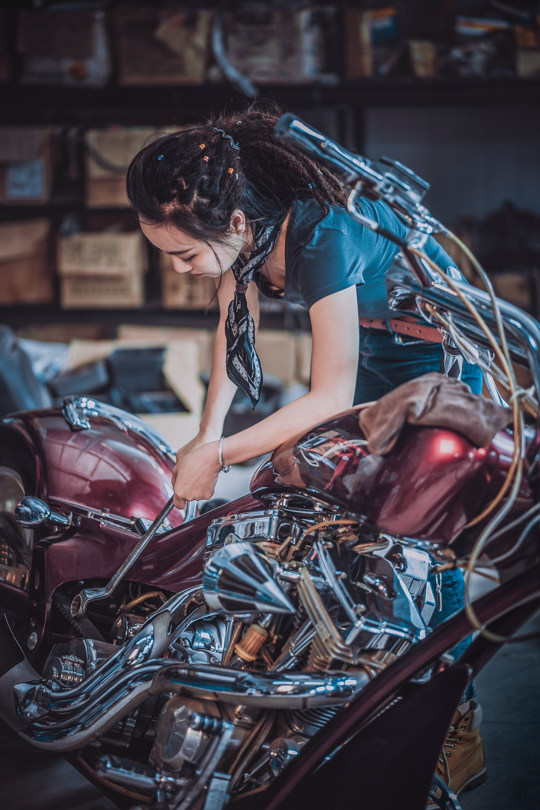

Pros: cheaper repair, gain knowledge/skills and a useful manual, and pride from doing the work myself.
Cons: unforeseen problems—or more parts to be ordered from MAX BMW—may stretch out the project timeline, I might not notice other underlying issues that should be addressed (like the engine oil leak JB had).
I think there is great value in learning how to do things for one's self.
The world is a happy place.
